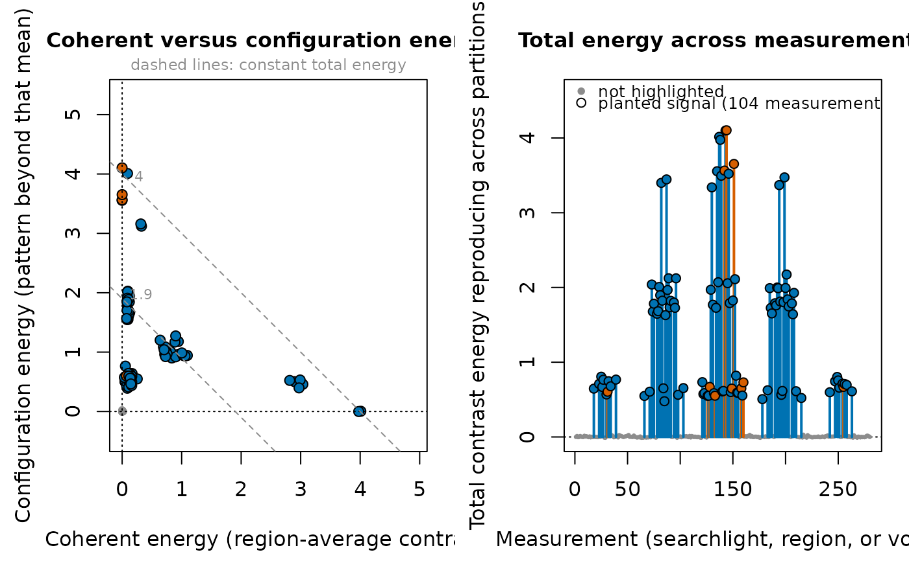
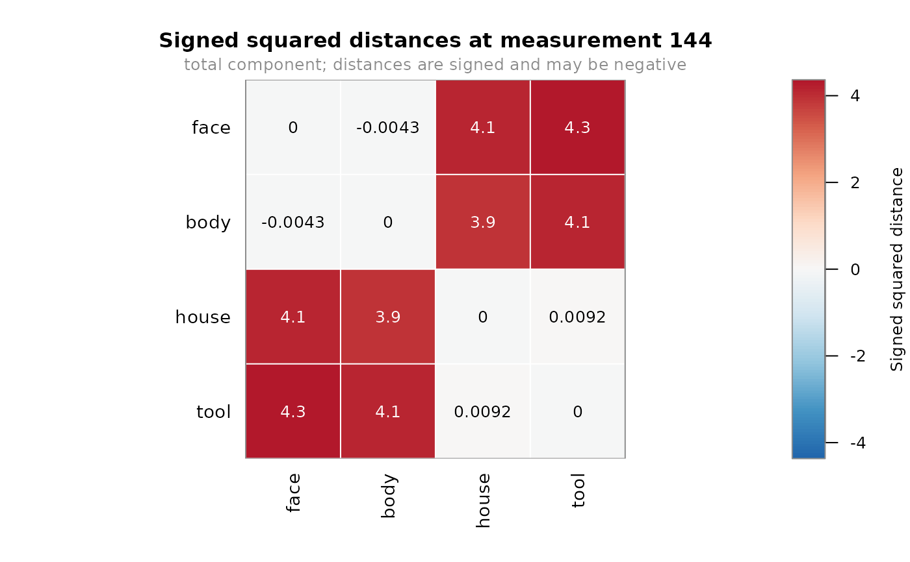
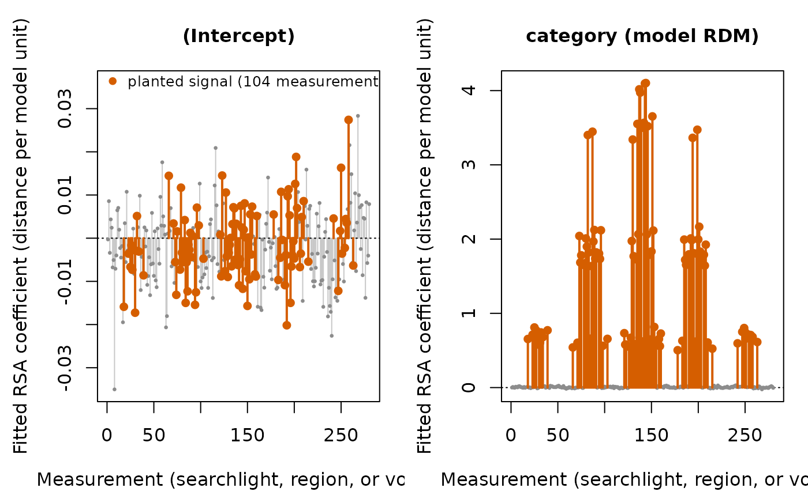
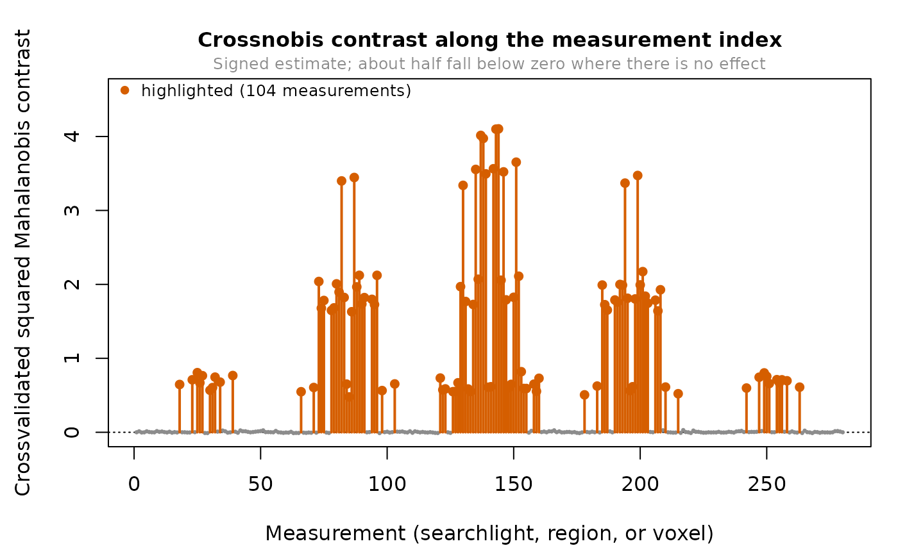
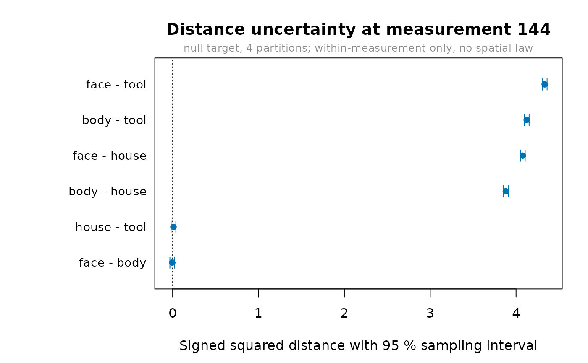

Base-graphics pictures of the objects returned by contrast_energy(),
rdm(), rsa(), crossnobis(), and rdm_sampling_covariance(). Each
method draws only what the view already holds: nothing is recomputed,
nothing is smoothed, and negative crossvalidated estimates are drawn where
they fall rather than clipped at zero.
Usage
# S3 method for class 'effect_contrast_view'
plot(
x,
which = c("both", "decomposition", "profile"),
highlight = NULL,
highlight_label = "highlighted",
main = NULL,
top = 200L,
...
)
# S3 method for class 'effect_rdm_view'
plot(x, measurement = NULL, annotate = NULL, main = NULL, ...)
# S3 method for class 'effect_rsa_view'
plot(
x,
terms = NULL,
highlight = NULL,
highlight_label = "highlighted",
main = NULL,
top = 200L,
...
)
# S3 method for class 'effect_crossnobis_view'
plot(
x,
highlight = NULL,
highlight_label = "highlighted",
main = NULL,
top = 200L,
...
)
# S3 method for class 'effect_sampling_covariance'
plot(x, estimate = NULL, level = 0.95, sort = TRUE, main = NULL, ...)Arguments
- x
A view object:
effect_contrast_view,effect_rdm_view,effect_rsa_view,effect_crossnobis_view, oreffect_sampling_covariance.- which
Which contrast panels to draw:
"both"(the default two-panel figure),"decomposition"for the coherent/configuration plane alone, or"profile"for the total-energy index plot alone. On acoherence_spectrum()the default is"decomposition"instead, and"profile"and"both"are refused: a spectrum's per-scale total is exactly its family weight times the whole-domain total, so that panel draws the analyst's own weights rather than anything about spatial scale (design/conservative-geometry-contract.mdsection 3.1).- highlight
Optional measurements to mark: positions, a logical mask with one value per measurement, or measurement identifiers. Measurements outside the view are an error rather than a silent drop.
- highlight_label
What the highlighted measurements are, named in the legend alongside their count, as in
"planted signal (104 measurements)". Say what the set means rather than that it was selected.- main
Optional title. For a multi-panel figure a character vector is recycled across panels.
- top
How many measurements keep a needle of their own once a profile panel holds more than five thousand of them, taken as the
topmeasurements furthest from the reference line in either direction. The default is 200, capped at the number of measurements the view has. The argument is validated on every call, including views small enough to draw every measurement, where it is otherwise unused.- ...
Further arguments passed to the underlying base-graphics call for each panel, such as
pch,cex,xlim, orcol.- measurement
Which measurement to draw. For an
effect_rdm_view, one position or identifier, or the string"mean"for the mean dissimilarity matrix over measurements. The default is the measurement with the largest mean distance.- annotate
Whether to print the numeric distance inside each cell of an RDM heatmap. The default prints them when there are at most eight experimental effects.
- terms
Optional character vector selecting which RSA coefficient columns to draw. The default draws every column, including the intercept and any nuisance terms.
- estimate
Optional point estimates to center the sampling intervals on: a numeric vector over the distance labels carried by
x, or aneffect_rdm_view, from which the row for the measurementxdescribes is taken. The default centers the intervals on zero, which shows the interval half-width implied by the declared calibration target.- level
Two-sided normal coverage for the sampling interval. This is a width computed from the analytic sampling covariance, not a calibrated confidence interval or a group-level test.
- sort
Whether to order the distance rows by their plotted center.
Details
plot() on an effect_contrast_view is the fastest way to see the
central claim of the package. The left panel places every measurement in
the coherent/configuration plane, where the dashed guides are lines of
constant total because coherent + configuration = total exactly. The
right panel walks the same total along the measurement index. Passing
highlight (for the generated fixture,
example_fmri_effects()$truth$signal_measurements) marks the
measurements that overlap the planted signal, so a correct analysis is
visible rather than asserted.
One color means one thing across both panels. Color is the sign of the
signed marginal, blue above zero and orange-red below; a black ring is
"highlighted", and the fill inside it still carries the sign; plain gray is
"not highlighted". When no highlight is given there is nothing for gray
to mean, and every measurement keeps its sign color.
Glyph size and opacity ease down as a panel fills, so a view of a few
thousand measurements stays readable; at or below five hundred
measurements nothing is rescaled. Above five thousand measurements one
glyph per measurement is no longer a picture of the data, and the contrast
panels change what they draw rather than overplotting. The profile panel
shades the central 95% of the values as a band, rules the median across
it, and keeps needles only for the top measurements furthest from the
reference line in either direction, so the negative half of a
crossvalidated estimate is still shown. The decomposition panel bins the
coherent/configuration plane into rectangular cells whose opacity follows
the log count and whose color is the signed marginal that dominates the
cell; the binning is a plain count, with no kernel and no smoothing.
Highlighted measurements are always drawn individually, on top of either
summary, however many of them there are.
See also
contrast_energy(), rdm(), rsa(), crossnobis(), and
rdm_sampling_covariance() for the objects these methods draw, and
as.data.frame() methods for the same values as a table.
Other geometry plans and views:
aggregate_first(),
bilinear_query(),
coherence_spectrum(),
compute_policy(),
contrast_energy(),
contribution(),
crossnobis(),
evaluate_geometry(),
example_fmri_effects(),
geometry_component(),
geometry_spectrum(),
latent_geometry(),
materialize_geometry(),
plan_crossnobis(),
plan_geometry(),
query_geometry(),
rdm(),
rsa(),
variation_query()
Examples
example <- example_fmri_effects()
plan <- plan_geometry(
example$fit$relation, example$frame,
cross_partitions(
example$fit$relation,
independence = "independent", generalizes_over = "run"
)
)
planted <- example$truth$signal_measurements
# Where does the animate-versus-inanimate contrast reproduce, and how does
# its energy split? The planted measurements fill in.
energy <- contrast_energy(plan, example$contrast)
plot(energy, highlight = planted, highlight_label = "planted signal")

# The signed squared distances at the strongest measurement.
distances <- rdm(plan)
plot(distances, measurement = which.max(energy$total))

# One panel per RSA coefficient, over measurements.
plot(rsa(plan, models = list(category = example$model_rdm)),
highlight = planted, highlight_label = "planted signal")

# The same estimand under a declared fixed noise metric.
metric <- noise_precision(
diag(example$domain$n_features), example$domain
)
mahalanobis_plan <- plan_geometry(
example$fit$relation, example$frame,
cross_partitions(example$fit$relation, independence = "independent"),
metric = metric
)
plot(crossnobis(mahalanobis_plan, example$contrast), highlight = planted)

# Analytic within-measurement uncertainty for those distances.
uncertainty <- rdm_sampling_covariance(
plan, example$fit, target = "null", at = which.max(energy$total)
)
plot(uncertainty, estimate = distances)
